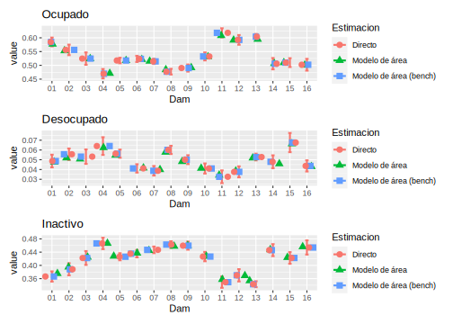

7.6 Creando los plot uni
7.6.1 Ocupado
temp_ocupado <- data_plot %>% select(dam,nd, starts_with("Ocupado"))
temp_ocupado_1 <- temp_ocupado %>% select(-Ocupado_low, -Ocupado_upp) %>%
gather(key = "Estimacion",value = "value", -nd,-dam) %>%
mutate(Estimacion = case_when(Estimacion == "Ocupado_mod" ~ "Modelo de área",
Estimacion == "Ocupado_Bench" ~ "Modelo de área (bench)",
Estimacion == "Ocupado"~ "Directo"))
lims_IC_ocupado <- temp_ocupado %>%
select(dam,nd,value = Ocupado,Ocupado_low, Ocupado_upp) %>%
mutate(Estimacion = "Directo")
p_ocupado <- ggplot(temp_ocupado_1,
aes(
x = fct_reorder2(dam, dam, nd),
y = value,
shape = Estimacion,
color = Estimacion
)) +
geom_errorbar(
data = lims_IC_ocupado,
aes(ymin = Ocupado_low ,
ymax = Ocupado_upp, x = dam),
width = 0.2,
linewidth = 1
) +
geom_jitter(size = 3)+
labs(x = "Dam", title = "Ocupado")7.6.2 Desocupado
temp_Desocupado <- data_plot %>% select(dam,nd, starts_with("Desocupado"))
temp_Desocupado_1 <- temp_Desocupado %>% select(-Desocupado_low, -Desocupado_upp) %>%
gather(key = "Estimacion",value = "value", -nd,-dam) %>%
mutate(Estimacion = case_when(Estimacion == "Desocupado_mod" ~ "Modelo de área",
Estimacion == "Desocupado_Bench" ~ "Modelo de área (bench)",
Estimacion == "Desocupado"~ "Directo"))
lims_IC_Desocupado <- temp_Desocupado %>%
select(dam,nd,value = Desocupado,Desocupado_low, Desocupado_upp) %>%
mutate(Estimacion = "Directo")
p_Desocupado <- ggplot(temp_Desocupado_1,
aes(
x = fct_reorder2(dam, dam, nd),
y = value,
shape = Estimacion,
color = Estimacion
)) +
geom_errorbar(
data = lims_IC_Desocupado,
aes(ymin = Desocupado_low ,
ymax = Desocupado_upp, x = dam),
width = 0.2,
linewidth = 1
) +
geom_jitter(size = 3)+
labs(x = "Dam", title = "Desocupado")7.6.3 Inactivo
temp_Inactivo <- data_plot %>% select(dam,nd, starts_with("Inactivo"))
temp_Inactivo_1 <- temp_Inactivo %>% select(-Inactivo_low, -Inactivo_upp) %>%
gather(key = "Estimacion",value = "value", -nd,-dam) %>%
mutate(Estimacion = case_when(Estimacion == "Inactivo_mod" ~ "Modelo de área",
Estimacion == "Inactivo_Bench" ~ "Modelo de área (bench)",
Estimacion == "Inactivo"~ "Directo"))
lims_IC_Inactivo <- temp_Inactivo %>%
select(dam,nd,value = Inactivo,Inactivo_low, Inactivo_upp) %>%
mutate(Estimacion = "Directo")
p_Inactivo <- ggplot(temp_Inactivo_1,
aes(
x = fct_reorder2(dam, dam, nd),
y = value,
shape = Estimacion,
color = Estimacion
)) +
geom_errorbar(
data = lims_IC_Inactivo,
aes(ymin = Inactivo_low ,
ymax = Inactivo_upp, x = dam),
width = 0.2,
linewidth = 1
) +
geom_jitter(size = 3)+
labs(x = "Dam", title = "Inactivo")
p_ocupado/p_Desocupado/p_Inactivo
knitr::opts_chunk$set(warning = FALSE,
message = FALSE,
cache = TRUE)
library(kableExtra)## Warning: package 'kableExtra' was built under R version 4.2.2tba <- function(dat, cap = NA){
kable(dat,
format = "html", digits = 4,
caption = cap) %>%
kable_styling(bootstrap_options = "striped", full_width = F)%>%
kable_classic(full_width = F, html_font = "Arial Narrow")
}